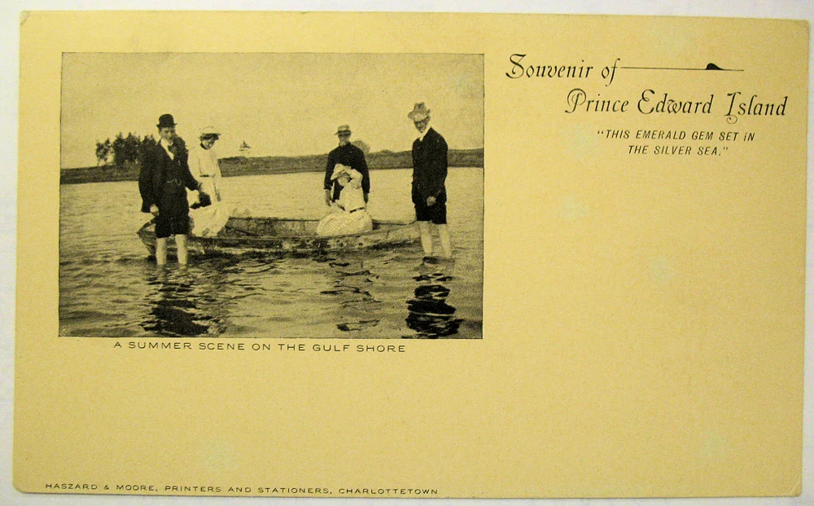
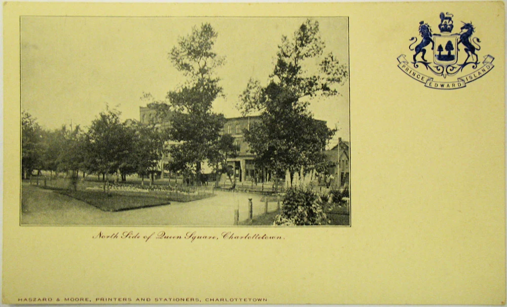
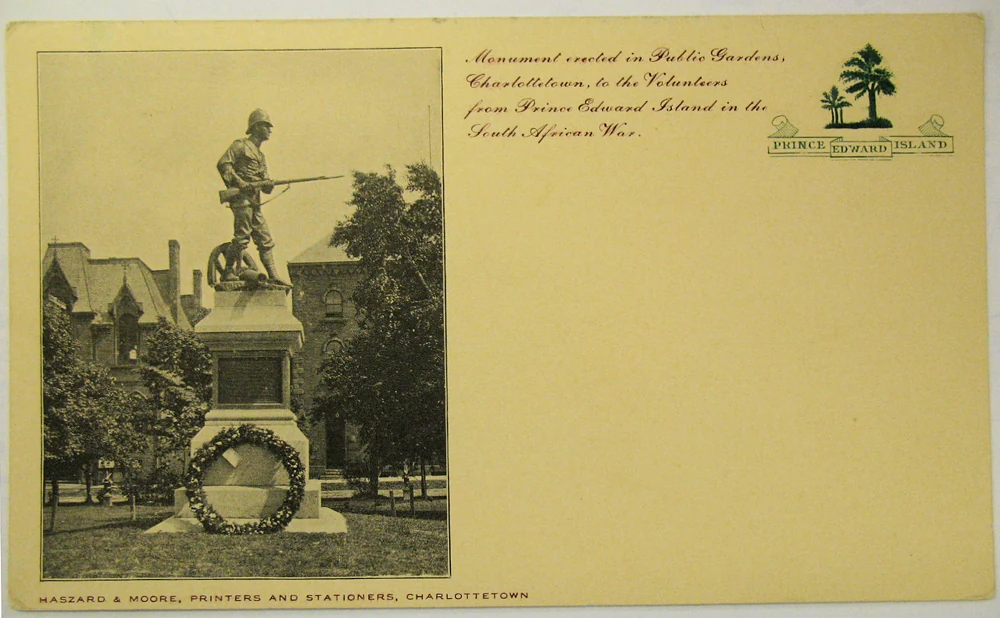

Haszard & Moore: the Island on both sides
There is a second picture waiting on the back of an early Haszard & Moore postcard. Beneath the address space sits a tiny view of the Colonial Building. On the front, Fairholm rests behind its garden fence, Great George Street leads towards the water, or a beach party settles into the sand. These souvenirs are one part of a varied postcard stock that also included Belgian colour prints, green-backed views from Saxony and a quiet sepia portrait of Prince of Wales College.
Haszard & Moore’s printing business and bookshop faced Queen Square from Grafton Street. Harry Holman’s research provides the starting point for the early souvenirs. The albums below follow the cards’ back designs and printing, with the Belgian views divided between two distinct settings of the red publisher imprint. Each album includes a sample reverse; clicking a postcard opens both sides.
5 albums · 46 collection cards · 3 archive references
Four broad families, with the Belgian colour cards shown in two back variants.
The early souvenirs · pictures on both sides4 views · 5 cards · 3 archive references
A crest, an oval photograph or a souvenir inscription leaves room for a message on the front. Turn the card over and another little picture appears: the Colonial Building, now Province House. The front imprints describe Haszard & Moore as Printers and Stationers. The Fairholm copies preserve red and black caption lettering within this family.
See the identifying back



Other copies (1)





Harry Holman illustrated six examples from the P.E.I. Public Archives and Records Office. Three of those views are included here as credited archive references. The Cavendish beach card adds a seventh known subject: its seated beachgoers and parasols differ from the people beside a boat in the Gulf Shore scene. Two held examples, 1444 and 4029, were mailed in September 1904.
Belgian colour views · the wide red imprint7 views · 10 cards
Soft colour and red italic captions give these views a shared appearance. On the back, the widely spaced Haszard & Moore, Importers line extends beyond the heading above it. A short horizontal stroke caps the double dividing rule, and the stamp box identifies Belgium as the printing location.
See the identifying back


Other copies (1)


Several photographs return in the next album with a different setting of the publisher line. Keeping the two back variants together in their own albums lets those editions remain visible.
Belgian colour views · the compact red imprint15 views · 25 cards
The red Importers line is set in smaller, more closely packed letters beneath Private Post Card. The divided layout and Belgian printing credit remain. Alongside repeated scenes are the Three Sisters, the Market House crowded with wagons, the cannons at Fort Edward and a view across the East River.
See the identifying back


Other copies (1)

Other copies (1)

Other copies (1)


Other copies (1)


Other copies (1)

Other copies (1)


Other copies (1)

Other copies (1)


The iceboat photograph has a history beyond these editions. Harry Holman traced it to photographs credited to W. Erdley Hyndman in the April 1903 Prince Edward Island Magazine. He also compared the Belgian backs sold under Haszard & Moore and Taylor’s Bookstore names. His folding waterfront panorama records another H&M format beyond the single cards shown here.
The green Booksellers backs · phototyped in Saxony2 views · 4 cards
The harbour appears between tall trees, while the Earl Grey presses through the ice. Upright red captions accompany the colour pictures. Their green backs call the firm Booksellers; a long horizontal rule crosses above the message and address spaces. The unused harbour copy preserves the Phototyped in Saxony wording clearly.
See the identifying back


Other copies (1)

Other copies (1)
The stamp box also contains a printed number. Its purpose has not been established, so it is not used here to define a numbered series.
The sepia college view · the black Booksellers back1 view · 2 cards
Prince of Wales College fills the front in warm sepia, with a small, upright black caption. The reverse has plain black lettering and a Booksellers imprint. Two copies of this one subject are held, 2628 and 4140. It stands alone among the sepia H&M views in this collection for now.
See the identifying back


All publisher lists · J. D. Taylor · Carter & Co. · P. D. Ayer